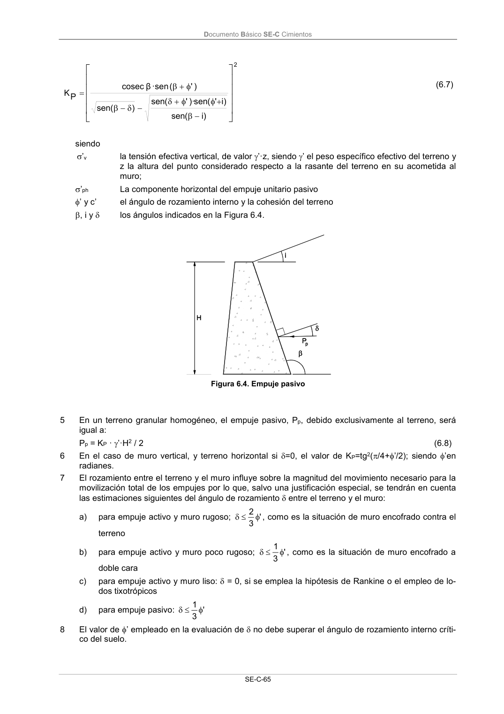

DB-SE-C · Página 70 · versión 2019-12-20
SHA256: a71133f4b0dca253e45ea3071c70f2a512354bcc5cd841bf89b1a502f567ac5e · página física 70 de 165 · métodos de encabezado
solo si están cotejados.
Formatos: Markdown · JSON de bloques · PDF p. 70 · imagen PNG
Documento Básico SE-C Cimientos
SE-C-65
2
)i
(
sen
)i
'
(
sen
)·
'
(
sen
)
sen(
)'
(
·sen
β
cosec
P
K
(6.7)
siendo
’v
la tensión efectiva vertical, de valor ’·z, siendo ’ el peso específico efectivo del terreno y
z la altura del punto considerado respecto a la rasante del terreno en su acometida al
muro;
’ph
La componente horizontal del empuje unitario pasivo
’ y c’
el ángulo de rozamiento interno y la cohesión del terreno
, i y
los ángulos indicados en la Figura 6.4.
Figura 6.4. Empuje pasivo
5
En un terreno granular homogéneo, el empuje pasivo, Pp, debido exclusivamente al terreno, será
igual a:
Pp = KP · ’·H2 / 2
(6.8)
6
En el caso de muro vertical, y terreno horizontal si =0, el valor de KP=tg2(/4+’/2); siendo ’en
radianes.
7
El rozamiento entre el terreno y el muro influye sobre la magnitud del movimiento necesario para la
movilización total de los empujes por lo que, salvo una justificación especial, se tendrán en cuenta
las estimaciones siguientes del ángulo de rozamiento entre el terreno y el muro:
a)
para empuje activo y muro rugoso;
'
3
2
, como es la situación de muro encofrado contra el
terreno
b)
para empuje activo y muro poco rugoso;
'
3
1
, como es la situación de muro encofrado a
doble cara
c)
para empuje activo y muro liso: = 0, si se emplea la hipótesis de Rankine o el empleo de lo-
dos tixotrópicos
d)
para empuje pasivo:
'
3
1
8
El valor de ’ empleado en la evaluación de no debe superar el ángulo de rozamiento interno críti-
co del suelo.
